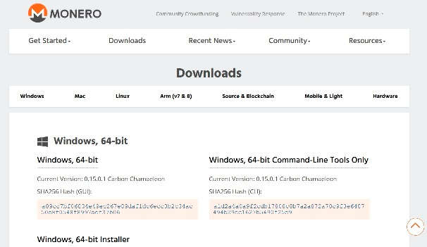
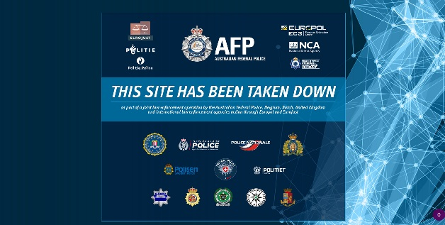

XMR Monero cryptocurrency website gets hacked
Authorities take down 'Imminent Monitor' RAT malware website
Dexphot malware uses fileless techniques to install cryptominer
SQL Injection Errors No Longer the Top Software Security Issue
Scientists Conclude Fluoride Causes Hypothyroidism Leading To Depression, Weight Gain, and Worse

Someone hacked the official website of the Monero cryptocurrency project [getmonero.org] and replaced legitimate Linux and Windows binaries available for download with malicious versions designed to steal funds from users wallets. The supply-chain cyberattack was revealed on Monday after a Monero user spotted that the cryptographic hash for binaries he downloaded from the official site didn't match the hashes listed on it Following an immediate investigation, the Monero team today also confirmed that its website, GetMonero.com, was indeed compromised, potentially affecting users who downloaded the CLI wallet between Monday 18th, 2:30 am UTC and 4:30 pm UTC. XMRCoreTeam investigates to find people who stay behind this attack.
Source: getmonero.org / thehackernews.com

A hacking tool that was able to give full remote control of a victim’s computer to cybercriminals has been taken down as a result of an international law enforcement operation targeting the sellers and users of the Imminent Monitor Remote Access Trojan (IM-RAT).
The investigation, led by the Australian Federal Police (AFP), with international activity coordinated by Europol and Eurojust, resulted in an operation involving numerous judicial and law enforcement agencies in Europe, Colombia and Australia.
Coordinated law enforcement activity has now ended the availiblity of this tool, which was used across 124 countries and sold to more than 14 500 buyers. IM-RAT can no longer be used by those who bought it.
Search warrants were executed in Australia and Belgium in June 2019 against the developer and one employee of IM-RAT. Subsquently, an international week of actions was carried out this November, resulting in the takedown of the Imminent Monitor
infrastructure and the arrest at this stage of 13 of the most prolific users of this Remote Access Trojan (RAT). Over 430 devices were seized and forensic analysis of the large number of computers and IT equipment seized continues.
Actions were undertaken this week in the framework of this operation in the following countries: Australia, Colombia, Czechia, the Netherlands, Poland, Spain, Sweden and the United Kingdom.
Source: europol.europa.eu / imminentmethods.net
Microsoft Corporation revealed its discovery of a polymorphic malware that uses fileless techniques to execute a cryptomining program on victimized machines.
Dubbed Dexphot, the malware was first observed in October 2018 when Microsoft detected a campaign that “attempted to deploy files that changed every 20 to 30 minutes on thousands of devices,” according to a blog post published yesterday by the Microsoft Defender ATP Research Team. At one point, on June 18, Microsoft saw reports of Dexphot-related malicious behavior in close to 80,000 machines, though that number dropped to under 10,000 by July 19.
Dexphot sports a complex attack chain that relies largely on legitimate processes (aka living off the land) to ultimately execute the payload. According to Microsoft, the process chain involves five files: an installer with two URLs, an MSI package file, a password-protected ZIP archive, a loader DLL, and an encrypted data file with three executables. These executables are loaded via process hollowing, a fileless technique that involves replacing the contents of a legitimate system process with malicious code.
Source: microsoft.com
SQL injection errors are no longer considered the most severe or prevalent software security issue.
Replacing it at the top of the Common Weakness Enumeration (CWE) list of most dangerous software errors is "Improper Restriction of Operations within the Bounds of a Memory Buffer." Cross-site scripting (XSS) errors rank second on the list, followed by improper input validation, information exposure, and out-of-bounds read errors. SQL injection flaws are now ranked sixth on the list of most severe security vulnerabilities.
The Department of Homeland Security's Systems Engineering and Development Institute, operated by The MITRE Corp., this week released an updated top 25 CWE listing of software errors. The update is the first in eight years and ranks security vulnerabilities based on prevalence and severity.
The CWE team looked at a dataset of some 25,000 Common Vulnerabilities and Exposures (CVE) entries over the past two years and focused on security weaknesses in software that are both common and have the potential to cause significant harm. Issues that have a low impact or are rarely excluded were filtered out.
Source: darkreading.com / cwe.mitre.org/top25/archive/2019/2019_cwe_top25.html
Researchers at the University of Kent are the latest establishment to have studied this growing problem.
The extensive study involved them looking at data from nearly every single medical practice in England, and they found that fluoride may be increasing the risk for hypothyroidism, or an underactive thyroid, a condition in which the thyroid gland fails to produce enough hormones, resulting in symptoms such as fatigue, obesity and depression.
The study, published in the Journal of Epidemiology and Community Health, included the largest population ever to be analysed in relation to fluoride consumption.
Source: anonhq.com / organicandhealthy.org/2016/11/scientists-conclude-fluoride-causes.html
 ZOJ.ME Is a place for viral news from internet.
ZOJ.ME Is a place for viral news from internet.